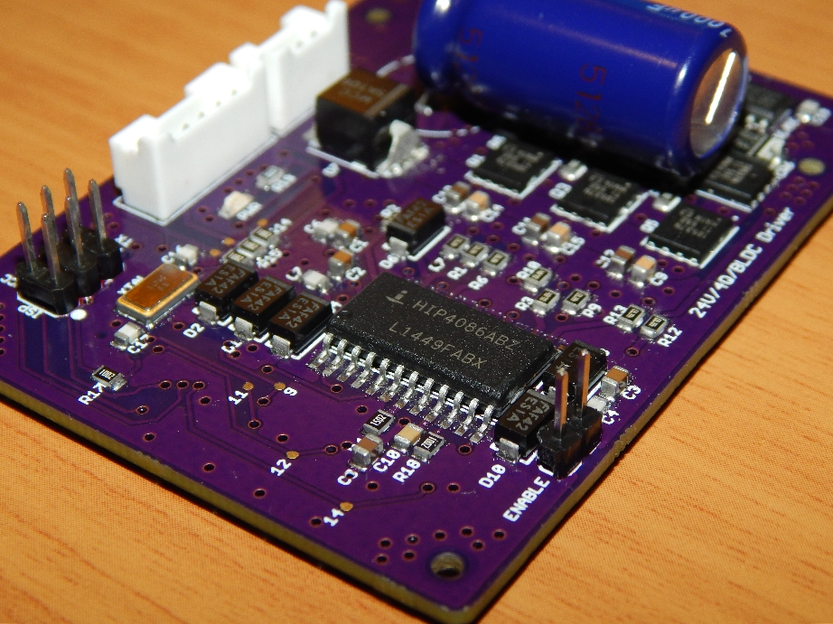
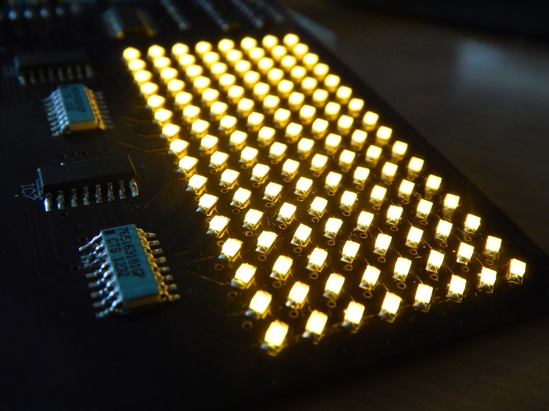

Kyle Hess
Projects
These projects showcase some of the work I have done in teams and as an individual. They have tested my skills and inspired me to develop many new ones.
MONOTONE: A 10MHz GPS-Disciplined Oscillator (GPSDO) Frequency Reference
January 20, 2023 - Ongoing
A GPS-locked reference signal generator based around a 10 MHz VCOCXO, uBlox LEA-M8, and TDC7200.
Learn more
Field Oriented Motor Control + eBike
August 28, 2021 - Ongoing
The final chapter in the BLDC motor saga.
This motor controller employs a Space Vector Modulation scheme using encoder feedback and phase current sensors.
Learn more
BLDC Driver + Encoder Reader
December 11, 2020
A BLDC motor driver with a decoder for a quadrature rotary encoder.
The motor and encoder can be combined to accurately measure the motor position.
Learn more

Incremental Encoder Reader
September 1, 2020
A decoder for reading and displaying the output of a quadrature rotary encoder.
Learn more

Quadcopter Flight Controller
March 4, 2019
ARM Cortex M4-based flight controller for a custom racing drone.
Learn more

BLDC Motor Driver (Capstone)
May 3, 2017
A Brushless DC motor driver PCB utilizing an Atmel ATMEGA328 microcontroller
for three phase MOSFET switching.
Based around the HIP4086A 3-Phase MOSFET driver.
Learn more

Quick Balancing Cube (QB3 Capstone)
April 20, 2017
An inverted pendulum in the form of a cube.
Utilizes the DF45 BLDC motor, and the custom motor driver
on this page (Group Project).
Learn more

Brushless Motor Controller (Capstone)
March 9, 2017
Three phase brushless motor controller unit utilizing an Arduino for
sensor feedback and closed-loop motor control (Group Project).
Learn more

LED Matrix Display
November 5, 2016
A 16X8 LED matrix PCB designed for interfacing with the Arduino Uno.
Learn more

Cedar Strip Canoe
June 20, 2011
A fiberglass reinforced, twelve-foot Red Cedar canoe with Cherry side rails.
Learn more